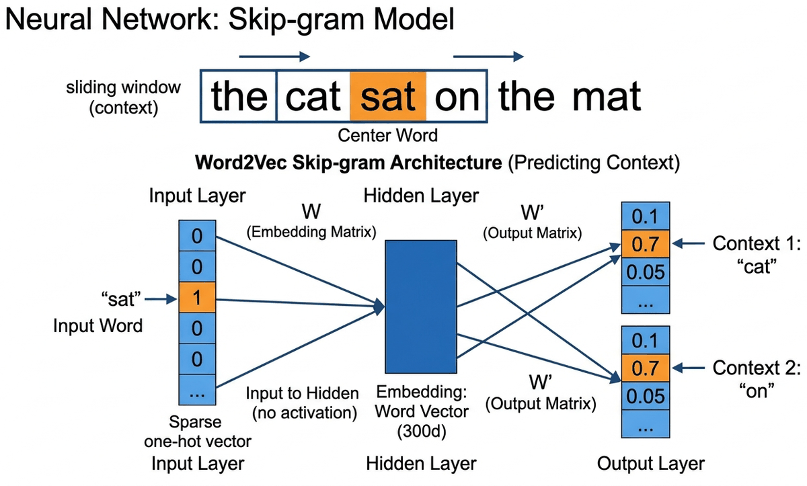
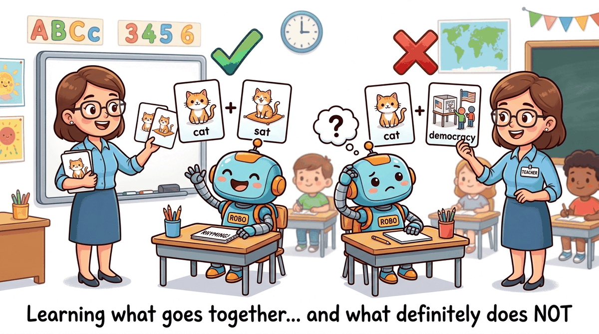
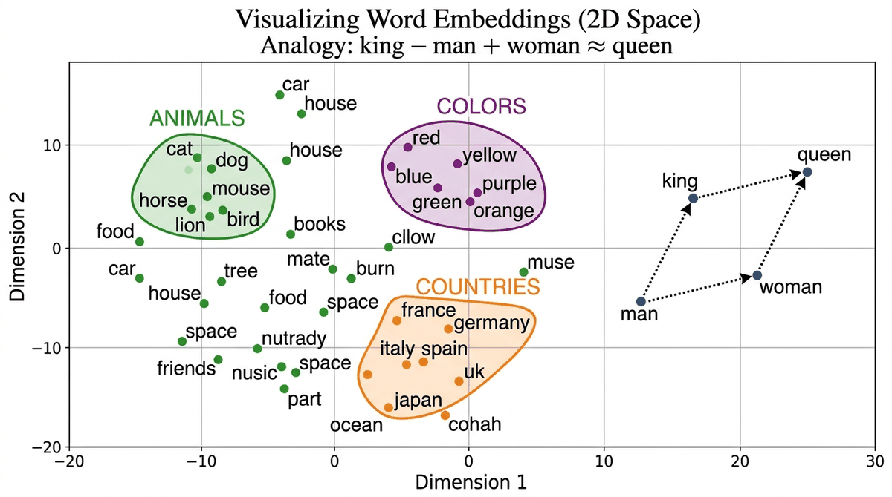

Prerequisites
This section builds on the text preprocessing pipeline from Section 1.2 and the concept of feature representations from Section 0.1. You should understand why sparse, high-dimensional representations (like one-hot vectors) are problematic. Familiarity with basic linear algebra (dot products, vector similarity) will help with the embedding arithmetic examples. The embedding concepts here lay the groundwork for the semantic search techniques covered later in Section 18.1.
You will see both "encoding" and "embedding" used frequently in NLP. They mean different things. An encoding (like one-hot encoding) is a fixed, rule-based mapping from symbols to numbers; no learning is involved. An embedding is a learned dense representation where the values are trained to capture meaningful relationships. One-hot encoding treats every word as equally different from every other word. Embeddings learn that "cat" and "kitten" should be close together. This section is about the shift from encodings to embeddings.
The Distributional Hypothesis
In 2013, Tomas Mikolov and colleagues at Google published a paper that would reshape all of NLP. The idea was elegantly simple: instead of defining word representations by hand, learn them from data. The result was Word2Vec: dense vectors where semantically similar words are geometrically close.
"You shall know a word by the company it keeps." J.R. Firth, 1957 (the distributional hypothesis)
This idea (the distributional hypothesis) says that words appearing in similar contexts tend to have similar meanings. Why does this work? Consider: the words "cat" and "dog" both appear near "pet," "veterinarian," "cute," "fed," and "walked." A word you have never seen, like "wug," that also appears near "pet" and "fed" is probably an animal too. Context is a remarkably reliable proxy for meaning. This principle is the foundation of all modern word representations, including the embeddings inside GPT-4 and Claude.
Word2Vec was the "ImageNet moment" for NLP. Before Word2Vec, NLP was mostly a separate field from deep learning. After Word2Vec, the entire field pivoted to neural approaches. It proved that neural networks could capture meaning, and that this meaning was useful for virtually every NLP task. The gradient descent and loss function techniques from Module 0 are exactly how these embedding vectors are trained.
Think of word embeddings as GPS coordinates in meaning-space. Just as GPS gives every location on Earth a pair of numbers (latitude, longitude), word embeddings give every word a set of numbers (typically 100 to 300 of them) that locate it in "meaning-space." Cities that are geographically close have similar GPS coordinates; words that are semantically similar have similar embedding coordinates. "Cat" and "dog" are neighbors in this space, just as Paris and London are neighbors on a map.
Why 300 dimensions? With only 2 or 3 dimensions, there is not enough room to capture all the nuances of meaning. "Cat" needs to be near "dog" (both animals), near "pet" (domestication), and near "meow" (sound), but far from "economy" and "python." Representing all these relationships simultaneously requires many dimensions. Research has shown that 100 to 300 dimensions is the sweet spot: below 100, there are not enough degrees of freedom; above 300, you get diminishing returns while increasing memory and compute cost.
Word2Vec: How It Works
Word2Vec comes in two flavors. We will focus on Skip-gram, which is simpler to understand and more widely used.
The idea: given a center word, predict the surrounding context words. Let us trace through a concrete example.
Take the sentence: "the cat sat on the mat" with a window size of 2. The model slides a window across the sentence, and at each position, creates training pairs:
| Center Word | Context Words (window=2) | Training Pairs Generated |
|---|---|---|
| the | cat, sat | (the→cat), (the→sat) |
| cat | the, sat, on | (cat→the), (cat→sat), (cat→on) |
| sat | the, cat, on, the | (sat→the), (sat→cat), (sat→on), (sat→the) |
| on | cat, sat, the, mat | (on→cat), (on→sat), (on→the), (on→mat) |
| ... | ... | ... |
After processing billions of such pairs, words that frequently appear in similar contexts (like "cat" and "dog," which both appear near "the," "sat," "chased") end up with similar vectors. Words that never share context (like "cat" and "economics") end up far apart.
The Architecture (It Is Surprisingly Simple)
Skip-gram is a shallow neural network with just one hidden layer:
- Input: One-hot vector for the center word (dimension = vocabulary size V)
- Hidden layer: Multiply by weight matrix W (V × d): this produces a d-dimensional vector. This IS the word embedding.
- Output: Multiply by another matrix W' (d × V), apply softmax: this gives a probability distribution over all words in the vocabulary
Skip-gram: Given center word, predict context words. Works better for rare words.
CBOW (Continuous Bag of Words): Given context words, predict center word. Faster to train.
In practice, Skip-gram with negative sampling is the most common choice.

Every modern LLM starts with an embedding layer that works exactly like Word2Vec. When GPT-4 or Claude processes text, the very first thing it does is convert each token into a dense vector using a learned embedding matrix. The difference is scale: Word2Vec learns 300-dimensional embeddings from a few billion words; GPT-3 uses 12,288-dimensional vectors from trillions of tokens, refined through dozens of transformer layers. But the fundamental idea (learned dense vector per token) is identical.
Negative Sampling: Making Training Tractable
The naive softmax over a vocabulary of 100,000+ words is extremely expensive. Negative sampling simplifies this: instead of updating all 100K output weights, we only update the weights for the correct context word (positive) and a small random sample of "negative" words (typically 5 to 20).
In plain English: make the dot product between the center word and the real context word large (positive), and make the dot product with random words small (negative). The key insight is that this approximation works because the vast majority of vocabulary words are irrelevant to any given context. Sampling just a handful of negatives is representative of the full vocabulary, much like polling a few thousand people can predict a national election.
Think of it like a multiple-choice test: instead of ranking every word in the dictionary, the model only needs to pick the right answer from a handful of options. If it can reliably distinguish the correct context word from five random distractors, it has learned something meaningful about word relationships.
Without negative sampling, each training step computes a softmax over 100,000+ vocabulary entries: 100,000 dot products plus a normalization pass. With negative sampling (k=5), each step requires only 6 dot products (1 positive + 5 negatives). That is a roughly 16,000x reduction per training step. On a corpus of billions of word pairs, this is the difference between months of training and hours.

Training Word2Vec from Scratch
Let us train a Word2Vec model using Gensim on a real corpus: Code Fragment 1 below puts this into practice.
# NumPy computation # Key operations: training loop, embedding lookup, results display from gensim.models import Word2Vec from gensim.utils import simple_preprocess # Sample corpus (in practice, use millions of sentences) corpus = [ "the king ruled the kingdom with wisdom", "the queen ruled the kingdom with grace", "the prince and princess lived in the castle", "the man worked in the field every day", "the woman worked in the market every day", "a dog chased a cat across the garden", "the cat sat on the mat near the dog", "paris is the capital of france", "berlin is the capital of germany", "tokyo is the capital of japan", ] # Tokenize sentences = [simple_preprocess(s) for s in corpus] # Train Word2Vec (Skip-gram with negative sampling) model = Word2Vec( sentences, vector_size=50, # embedding dimensions window=3, # context window size min_count=1, # minimum word frequency sg=1, # 1 = Skip-gram, 0 = CBOW negative=5, # number of negative samples epochs=100, # training epochs ) # Explore the learned embeddings print("Vector for 'king':", model.wv['king'][:5], "...") print("Most similar to 'king':", model.wv.most_similar('king', topn=3)) print("Most similar to 'cat':", model.wv.most_similar('cat', topn=3)) # Peek inside: the embedding matrix is just a numpy array print(f"\nEmbedding matrix shape: {model.wv.vectors.shape}") # Output: (num_words, 50): each row is one word's vector
Measuring Similarity: Cosine Similarity
Before we explore analogies, we need to understand how similarity is measured between word vectors. The standard metric is cosine similarity: the cosine of the angle between two vectors. Code Fragment 2 below puts this into practice.
# Measuring cosine similarity between word vectors from numpy import dot from numpy.linalg import norm def cosine_sim(a, b): return dot(a, b) / (norm(a) * norm(b)) # Using pre-trained Word2Vec vectors print(cosine_sim(wv['cat'], wv['dog'])) # ~0.76 (both are pets) print(cosine_sim(wv['cat'], wv['king'])) # ~0.13 (unrelated) print(cosine_sim(wv['king'], wv['queen'])) # ~0.65 (both are royalty) print(cosine_sim(wv['paris'], wv['france'])) # ~0.77 (capital-country)
Euclidean distance measures the straight-line distance between two points. The problem: high-frequency words tend to have larger vector magnitudes, which inflates Euclidean distances even between semantically similar words. Cosine similarity normalizes this away by focusing purely on angle/direction. This is why virtually all embedding-based systems use cosine similarity, and why you will see it again in vector databases (Module 18) and RAG systems (Module 19).
Pre-trained Word2Vec Bootstraps a Product Search Engine
Who: Search engineer at a mid-size e-commerce platform (50,000 products, 2M monthly searches)
Situation: The existing keyword-based search (Elasticsearch with BM25) returned zero results for 18% of queries because users searched with synonyms the product titles did not contain (e.g., "sneakers" vs. "running shoes," "couch" vs. "sofa").
Problem: Building a custom embedding model required labeled query-product pairs that did not exist yet. Collecting this data would take months.
Dilemma: The team considered three approaches: manually curating a synonym dictionary (labor-intensive, never complete), fine-tuning BERT on product descriptions (expensive, needed GPU infrastructure), or using pre-trained Word2Vec to expand queries with similar terms (quick, free, but potentially noisy).
Decision: They loaded Google News Word2Vec (300-dimensional, 3M words) and used it to expand each query term with the top-3 most similar words (cosine similarity above 0.65).
How: For "sneakers," Word2Vec returned ["trainers," "shoes," "footwear"]. These synonyms were added to the Elasticsearch query with a reduced boost factor (0.3x) so exact matches still ranked higher.
Result: Zero-result queries dropped from 18% to 4.2%. Click-through rate on the first page improved by 23%. Implementation took 2 days with no GPU costs.
Lesson: Pre-trained word embeddings are a powerful, zero-cost tool for semantic expansion in search and retrieval systems. They work best as a complement to exact matching, not a replacement.
The Magic of Word Analogies
The "king minus man plus woman equals queen" analogy became so iconic that it practically served as the pickup line of the NLP community for five years straight. Researchers eventually discovered that the analogy trick works less reliably than conference talks implied, but by then it had already launched a thousand papers.
The most striking property of word embeddings is that they capture relationships as vector arithmetic: Code Fragment 3 below puts this into practice.
# Word analogy: king - man + woman = ? # (Using pre-trained vectors for reliable results) import gensim.downloader as api # Download pre-trained Word2Vec (trained on Google News, 3M words) # NOTE: This download is approximately 1.7 GB. It may take several minutes. wv = api.load('word2vec-google-news-300') # The famous analogy result = wv.most_similar(positive=['king', 'woman'], negative=['man'], topn=1) print(result) # [('queen', 0.7118)] # More analogies print(wv.most_similar(positive=['paris', 'germany'], negative=['france'], topn=1)) # [('berlin', 0.7327)] Paris is to France as Berlin is to Germany print(wv.most_similar(positive=['walking', 'swam'], negative=['swimming'], topn=1)) # [('walked', 0.7458)] captures verb tense relationships too!
The analogy "king − man + woman = queen" works because the training process creates a linear structure in the embedding space. The direction from "man" to "woman" encodes the concept of "gender," and this same direction applies to other word pairs. Similarly, there is a "capital-of" direction, a "past-tense" direction, and hundreds of other semantic and syntactic relationships, all encoded as linear directions in a high-dimensional space. This is why word embeddings are so powerful: complex semantic relationships become simple geometry.
- Try the analogy
wv.most_similar(positive=['doctor', 'woman'], negative=['man']). Does the result reflect real-world knowledge or social bias? Why? - Change the
vector_sizein the Gensim training example from 100 to 50 and then to 300. How does similarity quality change? Is bigger always better? - Compare
wv.similarity('good', 'great')vs.wv.similarity('good', 'bad'). Are antonyms far apart or close? What does this tell you about the distributional hypothesis?
Levy and Goldberg proved that Word2Vec's Skip-gram with negative sampling is implicitly factorizing a word-context PMI (Pointwise Mutual Information) matrix. Specifically, the dot product of two word vectors approximates the PMI of their co-occurrence, shifted by log(k) where k is the number of negative samples. This result was important for two reasons: (1) it connected neural embedding methods to classical statistical methods, showing that Word2Vec's "magic" had a principled mathematical explanation; and (2) it explained why explicit matrix factorization methods (like SVD on the PMI matrix) produce embeddings of comparable quality. The paper remains one of the most cited theoretical analyses of word embeddings.
Levy, O. & Goldberg, Y. (2014). "Neural Word Embedding as Implicit Matrix Factorization." NeurIPS 2014.
Word2Vec learns that "king" and "queen" appear in similar contexts. It does not understand that a king rules a kingdom. The analogy results are a byproduct of linear structure in co-occurrence patterns, not evidence of semantic understanding. Proof: Word2Vec also produces confident but nonsensical analogies reflecting societal biases in the training data rather than genuine comprehension.
GloVe: Global Vectors for Word Representation
GloVe (Pennington et al., 2014, Stanford) takes a fundamentally different approach from Word2Vec. Instead of learning from individual (center, context) pairs one at a time, GloVe first builds a global co-occurrence matrix (a giant table counting how often every word appears near every other word across the entire corpus) and then factorizes this matrix into low-dimensional vectors.
Think of it this way: Word2Vec learns by reading one sentence at a time (local context). GloVe first compiles all the statistics, then learns from the complete picture (global statistics). Neither approach is strictly better; they tend to produce similar-quality embeddings, but the mathematical foundations are quite different.
In more precise terms, GloVe trains word vectors so that the dot product of two word vectors equals the logarithm of how often they co-occur. The objective function penalizes any discrepancy between the predicted (dot product) and observed (log co-occurrence count) values, weighted so that neither extremely rare nor extremely frequent pairs dominate the training.
The real power of GloVe comes from the insight that ratios of co-occurrence probabilities encode meaning:
| P(w | ice) | P(w | steam) | Ratio | |
|---|---|---|---|
| solid | high | low | >> 1 (related to ice, not steam) |
| gas | low | high | << 1 (related to steam, not ice) |
| water | high | high | ≈ 1 (related to both) |
| fashion | low | low | ≈ 1 (related to neither) |
| Probe word k | P(k|ice) | P(k|steam) | Ratio P(k|ice)/P(k|steam) |
|---|---|---|---|
| solid | 1.9 x 10-4 | 2.2 x 10-5 | 8.9 (large: ice is related to solid) |
| gas | 6.6 x 10-5 | 7.8 x 10-4 | 0.085 (small: steam is related to gas) |
| water | 3.0 x 10-3 | 2.2 x 10-3 | 1.36 (near 1: both relate to water) |
GloVe trains word vectors so that their dot products reproduce these log-ratios. Meaning is captured not by raw counts, but by how co-occurrence probabilities compare across contexts. Why are ratios more informative than raw counts? Because ratios cancel out the noise of overall word frequency. The word "water" appears frequently with both "ice" and "steam," so its raw count with either word is high. But the ratio is close to 1, correctly telling us that "water" does not discriminate between the two. Raw counts would misleadingly suggest strong association with both. Code Fragment 4 below puts this into practice.
# Loading pre-trained GloVe vectors import gensim.downloader as api # Download GloVe (trained on Wikipedia + Gigaword, 400K vocab, 100d) glove = api.load('glove-wiki-gigaword-100') # Same interface as Word2Vec print("GloVe similarity cat/dog:", glove.similarity('cat', 'dog')) print("GloVe analogy king-man+woman:", glove.most_similar(positive=['king', 'woman'], negative=['man'], topn=1))
FastText: Subword Embeddings
FastText (Facebook/Meta, 2016) extends Word2Vec with a critical improvement: it represents
each word as a bag of character n-grams. This subword approach foreshadows the subword tokenization methods (BPE, WordPiece) covered in Module 2 that modern LLMs rely on. The word "running" with n=3 becomes:
<ru, run, unn, nni, nin, ing, ng>
Why this matters: Code Fragment 5 below puts this into practice.
- Handles unseen words: Even if "unfriend" never appeared in training data, FastText can compose its vector from subwords like "un-", "friend", "-end" etc.
- Morphologically rich languages: Turkish, Finnish, Arabic, where a single word can have many inflected forms, benefit enormously from subword sharing.
- Typos and misspellings: "runnng" is still close to "running" because they share most subword n-grams.
# FastText handles out-of-vocabulary words from gensim.models import FastText # Train on same corpus ft_model = FastText( sentences, vector_size=50, window=3, min_count=1, sg=1, epochs=100, ) # FastText can produce vectors for UNSEEN words! print("Vector for 'kingdoms' (never in training data):") print(ft_model.wv['kingdoms'][:5]) # Works! Uses subword info from 'kingdom' # Word2Vec would crash: KeyError: "word 'kingdoms' not in vocabulary"
FastText Handles Misspellings in a Multilingual Support Ticket System
Who: ML team at a SaaS company processing 15,000 customer support tickets daily across English, Spanish, and German
Situation: The ticket routing system used Word2Vec embeddings to classify tickets into 8 support queues. It worked well for English but failed frequently for Spanish and German tickets.
Problem: Spanish and German are morphologically rich languages. A single verb like "configurar" (Spanish: to configure) produces dozens of inflected forms ("configurando," "configuraron," "reconfiguración"). Word2Vec treated each form as a completely separate word, and many were out-of-vocabulary.
Dilemma: The team considered training separate Word2Vec models per language (3x maintenance burden), building a custom stemmer for each language (complex, error-prone), or switching to FastText (uncertain improvement, retraining required).
Decision: They switched to FastText with character 3-grams through 6-grams, training one model per language on 200,000 support tickets each.
How: Used FastText(vector_size=300, window=5, min_count=2, min_n=3, max_n=6). The subword decomposition allowed "configurando" to share subwords with "configurar" and "reconfiguración."
Result: OOV rate dropped from 14% to 0.3%. Classification accuracy for Spanish tickets improved from 68% to 84%, and German from 71% to 86%. The model also gracefully handled customer typos like "configuraion" by composing known subword fragments.
Lesson: For morphologically rich languages or text with frequent misspellings (social media, support tickets, chat), FastText's subword approach is significantly more robust than whole-word embeddings.
Comparing the Three Approaches
Let us put Word2Vec, GloVe, and FastText side by side:
| Property | Word2Vec | GloVe | FastText |
|---|---|---|---|
| Training approach | Predict context from center word (local) | Factorize co-occurrence matrix (global) | Same as Word2Vec but with subwords |
| Handles unseen words? | No: crashes on OOV (out-of-vocabulary) words | No: crashes on OOV words | Yes: composes from subword n-grams |
| Handles morphology? | No: "run"/"running"/"ran" are unrelated | No | Yes: shared subwords connect inflections |
| Training speed | Fast (negative sampling) | Fast (matrix operations) | Slower (more parameters per word) |
| Best for | General English NLP | General English NLP | Morphologically rich languages, noisy text |
| Context-aware? | None of them: all produce static, context-independent vectors | ||
Despite their differences, Word2Vec, GloVe, and FastText all produce one vector per word. This is their shared fatal flaw, and the reason we needed ELMo, BERT, and transformers. The word "bank" gets the same vector whether it appears next to "river" or "account." Keep this limitation in mind as we transition to Section 1.4.
Visualizing Embeddings
High-dimensional embeddings can be projected to 2D for visualization using t-SNE (preserves local structure) or UMAP (preserves both local and global structure, and is much faster). Code Fragment 6 below puts this into practice.

# Implementation example # Key operations: embedding lookup, visualization from sklearn.manifold import TSNE import matplotlib.pyplot as plt # Get vectors for a subset of words words = ['king', 'queen', 'man', 'woman', 'prince', 'princess', 'cat', 'dog', 'paris', 'france', 'berlin', 'germany', 'tokyo', 'japan'] vectors = [wv[w] for w in words] # Project to 2D with t-SNE tsne = TSNE(n_components=2, random_state=42, perplexity=5) vectors_2d = tsne.fit_transform(vectors) # Plot plt.figure(figsize=(10, 8)) for i, word in enumerate(words): plt.scatter(vectors_2d[i, 0], vectors_2d[i, 1]) plt.annotate(word, (vectors_2d[i, 0]+0.5, vectors_2d[i, 1]+0.5), fontsize=12) plt.title("Word Embeddings Projected to 2D with t-SNE") plt.show()
# NumPy computation # Key operations: embedding lookup, visualization import seaborn as sns import numpy as np words = ['king', 'queen', 'man', 'woman', 'cat', 'dog', 'paris', 'france'] vectors = np.array([wv[w] for w in words]) # Compute cosine similarity matrix from sklearn.metrics.pairwise import cosine_similarity sim_matrix = cosine_similarity(vectors) # Plot heatmap plt.figure(figsize=(8, 6)) sns.heatmap(sim_matrix, xticklabels=words, yticklabels=words, annot=True, fmt=".2f", cmap="RdYlGn", vmin=-0.2, vmax=1) plt.title("Word Similarity Matrix (Cosine Similarity)") plt.tight_layout() plt.show() # You'll see bright blocks where royalty words cluster together, # and where animals cluster together, confirming the embedding structure
t-SNE and UMAP projections are lossy: they compress 300 dimensions into 2. Distances in the 2D plot do not always reflect true distances in the original space. Use visualizations for intuition-building, not for drawing precise conclusions about similarity.
✔ Check Your Understanding
1. What is the distributional hypothesis, and why is it the foundation of all word embedding methods?
Reveal Answer
The distributional hypothesis states that "words that appear in similar contexts tend to have similar meanings." For example, "dog" and "cat" frequently appear near words like "pet," "feed," and "cute," so they should have similar representations. This hypothesis is the foundation of Word2Vec, GloVe, and FastText because all three methods learn word vectors by analyzing co-occurrence patterns in large text corpora. The vectors are trained so that words sharing contexts end up close together in vector space.
2. How do the Skip-gram and CBOW architectures differ in their training objective?
Reveal Answer
Skip-gram takes a center word as input and tries to predict the surrounding context words. CBOW (Continuous Bag of Words) does the reverse: it takes the surrounding context words as input and predicts the center word. In practice, Skip-gram tends to perform better on rare words because each word gets more training signal as a center word, while CBOW is faster to train and works well with frequent words since it averages context signals.
3. Why is negative sampling essential for training Word2Vec efficiently, and what does it replace?
Reveal Answer
The original Word2Vec objective requires computing a softmax over the entire vocabulary for every training step, which is prohibitively expensive for vocabularies of hundreds of thousands of words. Negative sampling replaces this full softmax with a much simpler binary classification task: for each real (center, context) pair, the model also samples a small number of random "negative" words that did not appear in the context. The model learns to distinguish real context words from random noise. This reduces computation from O(V) to O(k), where k is the number of negative samples (typically 5 to 20).
4. How does GloVe differ from Word2Vec in its approach to learning word vectors?
Reveal Answer
Word2Vec is a predictive model that learns embeddings by sliding a window over text and predicting context words locally. GloVe (Global Vectors) is a count-based model that first builds a global word-word co-occurrence matrix from the entire corpus, then factorizes that matrix to produce embeddings. GloVe explicitly optimizes for the property that the dot product of two word vectors should approximate the logarithm of their co-occurrence count. In practice, both methods produce similar quality embeddings, but GloVe makes better use of global corpus statistics while Word2Vec is more scalable to very large datasets.
5. How does FastText handle out-of-vocabulary (OOV) words, and why is this a significant advantage over Word2Vec and GloVe?
Reveal Answer
FastText represents each word as a bag of character n-grams (subword units) rather than as a single atomic token. For example, "unhappiness" might be decomposed into subwords like "unh," "nha," "hap," "app," etc. The word's embedding is the sum of its subword embeddings. When the model encounters an OOV word it has never seen during training, it can still construct a meaningful vector by summing the embeddings of its constituent character n-grams. Word2Vec and GloVe cannot do this: if a word was not in the training vocabulary, it has no representation at all. This makes FastText especially valuable for morphologically rich languages and for handling typos, slang, and domain-specific terminology.
Section 1.3 Key Takeaways
- The distributional hypothesis works: words in similar contexts get similar vectors, and this captures real semantic relationships.
- Embeddings encode relationships as geometry: king:queen = man:woman is a vector arithmetic operation, not magic.
- 300 dimensions is the empirical sweet spot: enough capacity for rich semantics, not so much that it overfits.
- Word2Vec, GloVe, and FastText are complementary: same idea (dense vectors from context), different algorithms, similar results.
- The fatal flaw is shared: one vector per word, regardless of context. This is what Section 1.4 solves.